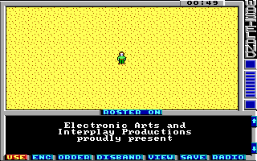

We are going to create our own custom game and therefor we don't need all the original maps of Wasteland. So we need a set of skeleton map files to work with. Because we are only creating a very small demo game we only create a game1 file for Wasteland. For larger games you may also need to create a game2 file but this tutorial will not need it.
First of all we have to unpack the original game1 file. This tutorial assumes you are using Windows (Shame on you), Wasteland is installed in c:\wland and your working directory for creating the new game is c:\work.
After you have installed the Wasteland Suite by following the installation instructions you need to execute the following command on the command line to unpack the original game1 file:
unpackgame c:\work c:\wland\game1
Now you have 20 map*.xml files, a savegame.xml and three shopitems*.xml files in your working directory.
We will only use map01.xml (a 32x32 map) for demonstration. Open this file in your favourite XML editor now. A normal text editor will also work but then you can't take advantage of the XML schema referenced in the XML files. So you don't get documentation for all the tags and attributes, you get no auto-completion and don't get validation.
At the top of the file you see the two tags actionClassMap and actionMap. These two tags contain the action class map (Giving each square an action class) and the action map (Giving each square a specific action of the action class). We want a clean map so you can set all action classes to 0 or for better readability you can also use a single dot instead of the number 0. The action map you can fill with 00 (or two dots for better readability). I recommend doing this for one line and then copying the line 31 times.
Below the actionMap tag you'll find the info tag. This tag contains some attributes describing some properties of the map. Configure it like this:
Below the info tag you'll find the battleStrings tag. Leave this one as it is. In later steps we want to add fights and so we need this tag. The battleStrings tag refers to all the strings used during combat (Like x hits y for z points and so on).
Now delete everything up to the strings tag.
We only need the strings which are referenced in the battleStrings tag, so you can delete all strings (except string 0) up to the id referenced in the s0 attribute of the battleStrings tag. For map01.xml this is 66. So delete the strings 1-65. String 0 is a special string and is always empty. I recommend you keep this string because you want actions in your map which don't output any message so these actions refer to string 0.
If you are a perfectionist you may change the ids of the battle strings so they start with 1, but this is not necessary. If you add new strings to the map you can use the ids of the strings you just deleted (1-65) and if this is not enough you can continue adding strings after the battle strings (id 99-255).
The last tag in the map file is the tileMap. This defines which tile should be drawn on which square. First of all delete the unknown attribute. Again I don't know what this value does. For our map it's not needed, so delete it. And when you know what this value does, please tell me. Replace all the values of the content of the tileMap tag with two dots. Here two dots are not the same as 00. Instead two dots mean using the background tile defined in the info tag. So if you decide later that you want nice green grass instead of desert sand as a background then you just need to change the backgroundTile attribute in the info tag and this also affects the tile map.
If you are lazy you can download a prepared skeleton file here: map01.xml. Copy this file into your working directory and you are done.
By the way: You may have noticed the attributes mapSize, msqSize and tilemapOffset in the root element of the XML document. Don't change these attributes!. The packgame program needs these values so it knows how to construct the new game file so Wasteland can find the maps in the new game file.
The initial savegame of Wasteland starts with the party on the first map somewhere in the lower right corner. For our new map we need the party to be in the upper left corner of map 1. So open the savegame.xml file in your editor and change the attributes x and y in the party tag to 0 and the map attribute to 1.
Now we are ready to create our first custom game file. Run the following command to pack the changed files into a new game1 file:
packgame c:\work c:\wland\game1
Now start up wasteland and you'll stand in the middle of a desert. (Ok, you are not in the middle, you are in the upper left corner, but who can tell when the map frame looks the same as the map itself...)
